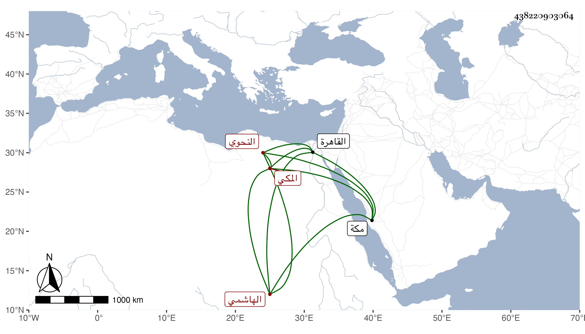

0902Sakhawi.DawLamic.ITO20230111-ara1.EIS1600.438220903064
Biography ID: 438220903064
418
حسن بن عطية بن محمد بن محمد بن أبي الخير محمد بن فهد الهاشمي المكي ابن عم صاحبنا النجم عمر ، أمه فاطمة ابنة الشيخ الموفق النحوي الشهاب أحمد ابن محمد بن كمال الدلوالي . ولد في صفر سنة ثلاث وأربعين وثمانمائة بمكة ونشأ بها فحفظ للحنفية بعد مختصراتهم وأجاز له جماعة منهم شيخنا والمقريزي والجمال الكازروني والمحب المطري والبدر بن فرحون والزين الزركشي وابن الفرات وابن الطحان وابن بردس وخلق ودخل القاهرة مرارا وغيرها للاسترزاق ، وسمع مني ثم جلس مع الشهود وتطور وتهور
